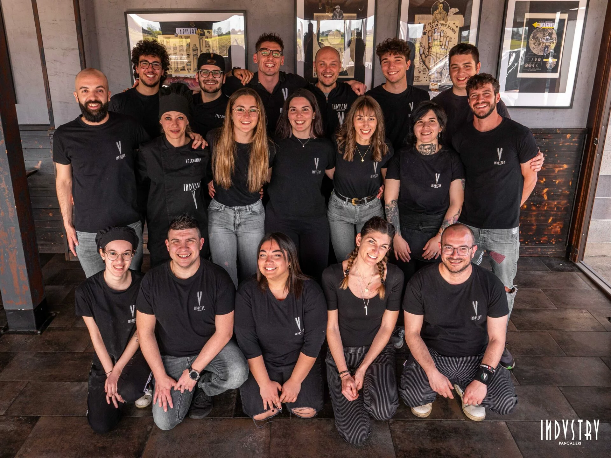

Chi siamo
Pulimenti Torino nasce dalla passione e dall'esperienza artigianale di Marco Bianchi. Dal 2015 ci occupiamo di restauro e pulitura di metalli, marmi e pietre con l'obiettivo di ridare splendore e valore ai materiali, con professionalità e tecniche eco-compatibili.
La nostra filosofia
Il nostro team
Marco Bianchi
Fondatore & Tecnico principale – oltre 15 anni di esperienza nella pulitura e nel restauro.

Elena Russo
Responsabile qualità e clienti – coordina ogni progetto per garantire i massimi standard.

Il nostro staff
Una squadra appassionata e specializzata in interventi rapidi, precisi e su misura.